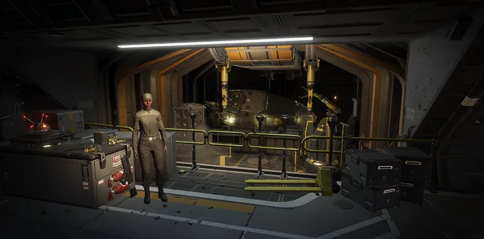

简化发射流程

“
简化发射流程 is a Tier 5 舰船模块 升级 for the 工程港.
升级效果
所有 支援武器 战略配备在呼叫后立即投放，缩短总体部署时间。
- In practice this 升级 is a 3-second reduction to call-in times of affected 战略配备
要求
- 扩建电路
 250 Common Sample
250 Common Sample 200 Rare Sample
200 Rare Sample 25 Super Sample
25 Super Sample 30,000 申购点 Slips
30,000 申购点 Slips
受影响的战略配备
- 突击队
- 盟友
- C4背包
- 荡平者
- 自动加农炮
- 重机枪
- 消耗性凝固汽油弹
- 纪元
- 除叶工具
- 空爆火箭发射器
- 轨道炮
- 灭菌器
- 激光加农炮
- 电弧投掷器
- 长矛
- 榴弹发射器
- 焚燃者
- 单兵导弹发射井
- 机枪
- W.A.S.P.发射器
- 破门锤
- 重装机枪
- 热熔枪
- 火焰喷射器
- 矛枪
- 唯一真旗
- 弹链式榴弹发射器
- 无后坐力步枪
- 缓和使者
- 反器材步枪
- 一次性反坦克武器
- 类星体加农炮
变更历史
补丁
描述
1.000.404
2024-07-04
Added to the game.